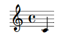
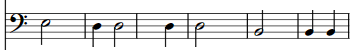

Parser
Obtenir la structure du fichier
Le principe du parseur est une traduction d'un langage définit par des règles de syntaxes en un autre langage. L'objectif ici a été de comprendre la syntaxe de AMN et d'en créer la grammaire avec python.
Dans un second temps, nous avons structuré l'objet résultant de ce parsing afin qu'il soit utilisable pour une traduction en un autre langage ultérieurement.
Définir une grammaire
La grammaire formelle de type Backus Naur Form est de la forme :
Nom = Mot
Prenom = Mot
P = Nom + Prenom
Nous avons utilisé le module PyParsing qui fournit un moteur d'interpretation de ce type de grammaire.
La classe AMNFileParser que nous avons créé prend donc en entrée un fichier AMN et procède à l'interprétation de ce dernier ligne par ligne de manière à éliminer les commentaires.
Usage :
>>> parsed = AMNFileParser("VitaminC.amn")
>>> print(parsed)
--------FILE INFOS------------
AMN version: 1
Title: Vitamin C
subtitle: None
Music Author: CAN
Lyrics Author:CAN
File Author:None
File to merge: None
Nb Voices:2
Structure de sortie
La strucure de sortie est pensée de manière à faciliter au maximum l'exploitation de toutes les informations :
Voir le détail de la structure de sortie
Limites
Bien que grand nombre des informations soient récupérées, ils reste à implémenter quelques élements :
- Complexes Beats - CBEATS
- Gammes définie par une quinte et gammes complexes - CSCALES
- Accords - ECN & CCN
- Note ornaments ne sont pas fonctionnels
- drum kit et alterations
- Lines d'accords et paroles - Chordsline, lyricsline
- déclarations de variables (dans datalines)
- Groupes de notes
Lilypond
Structure
Le langage Lylipond est un langage permettant de créer des partitions.
Il ressemble au langage html, car il utilise un système de balises. Les
commandes s’écrivent sous la forme \nomcommande et est suivie de balises comme << >> ou { }.
Par exemple :
\score{c'}
Donne le fragment de partition suivant :

Ici, bien qu’on ait seulement indiqué qu’on voulait le cinquième do (ici écrit c’), la clé de sol et le C représentant la métrique 4/4 sont mis automatiquement. Lylipond
n’est donc pas un langage où l’on écrit tout manuellement, certaines choses se mettent à jour automatiquement.
Entête
Le format Lilypond permet d'écrire proprement le titre, le sous-titre, le nom du
compositeur et du parolier, si le fichier AMN contient un ou plusieurs de ces élements.
Ces informations se situent dans l'entête.
L’entête d’un fichier Lilypond se définie par une commande header qui permet de donner les informations
essentielles d’une partition de musique comme le titre, l’auteur, le tempo, …

Notes
Les notes, en AMN comme en Lylipond, sont dans la notation Anglaise. Les notes
sont donc toute représentées par des lettres allant de A à G. La seule différence
entre le langage Lylipond et le langage AMN est qu'ils écrivent respectivement ces notes
en majuscule et en minuscule
Altérations de notes
Les Altérations de notes permettent de faire varier l’attaque avec laquelle on
joue la note, et de faire varier la hauteur de la note en ajoutant des dièses ou des
bémols, ainsi que des octaves et des demi-octaves. Chaque type d’altération à sa
commande précise, et on les places devant ou derrière la note selon si c’est une
altération de la dynamique ou de la hauteur de ladite note.
Le dièse, par exemple, s'écrit 'note is'. Si l'on veut écrire un mi dièse sur la partition,
la note sera rédigée ainsi:
eis
Ce qui donnera le rendu suivant:

Clé et hauteur relative
Pour chaque voix en AMN, il est possible de déterminer la tonalité des notes, en indiquant la note minimale. Le même principe existe en Lilypond grâce à la commande :
\relative note { mélodie }
La note indiqué donnera la note minimale, et toute note, sauf altération explicite, devra être plus aigüe qu’elle.
En revanche, le langage AMN ne donne pas la clé avec laquelle sont écrites les notes des mesures, car l’écriture anglaise avec des lettres permet de s’en passer. En revanche, cette clé est nécessaire en Lylipond, car si l’on se situe en clé de sol alors que nous avons une note très basse, celle-ci se trouvera hors de la portée et sera donc difficile à lire comme il suit :

Alors qu’avec une clé de fa, cela est plus intuitif.

Nous avons donc mis en place un système détectant si la tonalité des notes d’une voix est plus lisible en clé de fa ou en clé de sol. La clé de sol est mise en place automatiquement si aucune clé est indiquée. En revanche, la clé de fa doit être écrite manuellement si l’on veut qu’elle apparaisse.
La clé de fa s’écrit de la manière suivante :
\clef bass
Rythme
La notation des rythmes s'écrit en ajoutant un nombre derrière la note, qui indique sa nature.
Celle-ci se caractérise à partir de la ronde qui dure 4 temps sur
une métrique 4/4. Par exemple, une noire vaut ¼ de ronde, alors qu’une blanche vaut
2/4 de ronde donc en reprenant l’exemple ci-dessus un c4 serait une noire, un c2
serait une blanche et un c16 serait une double croche.
Nuances
AMN nous donne la possibilité de donner le volume d’un morceau. Sur une partition,
celui-ci se caractérise par des nuances qui se notent f pour forte, ff pour fortissimo,
p pour piano, pp pour piano etc. En AMN, nous avons la possibilité de rajouter autant de
f et de p qu’on veut, mais en Lylipond, le nombre maximum qu’on peut rajouter est de cinq.
Si un individu veut donc un morceau très sonore, caractérisé par beaucoup de f, sa partition
Lylipond lui affichera quand même cinq p ou f au maximum.
Portées groupées et répétitions
Pour un instrument à deux voix tel que le piano, AMN permet d’écrire une première
mélodie pour la main droite et une seconde pour la main gauche. En Lylipond, on peut
également assembler des portées à l’aide d’une accolade, dont la commande s’écrit :
\new GrandStaff<< \new Staff {voix une} \new Staff{voix deux}>>
On peut également donner un nom à ce groupe de portées en ajoutant avant le premier \newStaff la commande:
\set GrandStaff.instrumentName =# "nom de l'instrument"
Le langage AMN nous donne la possibilité de répéter n fois une même mesure avec n
choisie par celui qui écrit le fichier. Cela est compatible avec le langage Lylipond
via la commande suivante :
\repeat percent n { mesure à répeter}
Avantages/Inconvénients
Le format Lilypond est facile à lire pour les musiciens en créant une partition. Il ressemble beaucoup au langage AMN. Il nécessite un interpréteur
Ce qu’il nous reste à faire :
Nous n’avons pas fini d’implémenter les ornements, ainsi que le rythme. Nous sommes allé au plus simple de la mise en page mais nous pourrions demander les préférences de l’utilisateur avant de créer la partition.
MIDI
Nous avons également développé un parser MIDI qui regroupe à peu près les élements énoncés précédemment.
Un fichier comme le suivant peut être traduit en MIDI avec la version actuelle :
# frere jacques
O global \$C5:c\%90
O piano
| [CDEC][CDEC] [EF G][EF G] [G"A GF E C][G"A GF E C] [C<G C][C<G C]
#: [EFGE][EFGE] [GA B][GA B] [B"C BH G E][B"C BH G E] [E<B E][E<B E]
Nous avons utilisé le module MIDIUtil qui permet de génerer du MIDI assez aisément.
self.midi = MIDIFile(self.nbVoices, file_format=1, adjust_origin=False)
self.midi.addNote(0,i,0,note,timecounter,duration,volume)
Usage :
parsed = Midi_Parser(test)
filename = "test.midi"
os.system("stop "+filename)
with open(filename, 'wb') as output_file:
parsed.midi.writeFile(output_file)
os.system("start "+filename)